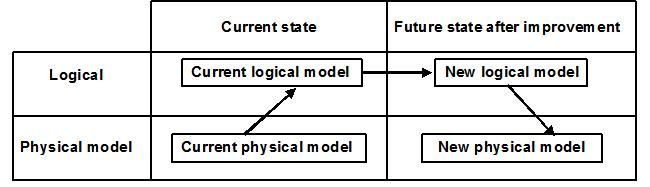

| Guideline: Developing Data Flow Diagrams |
 |
|
Outline This is the key to a successful project. This is because the need to rework in a subsequent process can be minimized, and because the productivity of development activities, and the quality and user satisfaction of the developed system can be increased by this method. For this purpose, it is important to study the essential mechanisms of applications in which data and process are complexly interrelated, understand data flows in the application and precisely identify and define the application requirements. A Data Flow Diagram (DFD) is a method by which an application system is analyzed and designed by regarding application functions as means of obtaining desired information and determining what data are needed for attaining the purpose. The process of understanding and analyzing a business and studying it based on the flow of data and then designing an application system is a basic step of the Data-Oriented Approach (DOA). It is one of the important concepts of ADSG. DFDs were developed by several people. Edward Yourdon (USA) proposed the way of describing application modeling in 1977 and Tom DeMarco spread the theory of structured analysis by proposing Structured Analysis and System Specification (SA) in 1978. In 1979, Chris Gane and Trish Sarson proposed a practical method in the form of Structured System Analysis (SSA). DFDs have been employed widely since the 1980s. DFD, normalization and Entity-Relationship Diagrams (ERDs) are important components of the Data-Oriented Approach. Characteristics The essential mechanisms and the information flow in an application in which data and processes are intricately interrelated can be clarified by graphic representation.
Aims In the Data Flow Diagram (DFD), an application system is portrayed as "a system made up of the output data which is the objective of the application, the input data needed to obtain it and the transformation processing". Attention is focused on the data flow, and the application system is concisely and clearly represented in graphical form. The aim of this kind of graphic representation is to enable users and developers "to identify the essential requirements of he application, thus enabling them to draw up the precise specifications". In DFDs, analysis and design work are conducted sequentially by means of model explosion.  An application system is clearly classified into the following viewpoints for representation of the logical model and physical model:
The aim is to be able to conduct analysis and design work without losing sight of the essential functions and objectives of the application. With the current physical model, one can investigate current applications and understand their problems, while the current logical model can be used for understanding and analysis, and the new logical model can be used to study the new application system, with the new physical model, operations and evaluation can be pursued in a staged and accurate manner. Which model is used at the starting point for development depends on the characteristics of the application system. Guidelines for selection are described in a subsequent topic "Four DFD Models." |
| © Copyright IBM Corp. 1987, 2012 All Rights Reserved Property of IBM These materials are intended only for use as part of an IBM engagement |